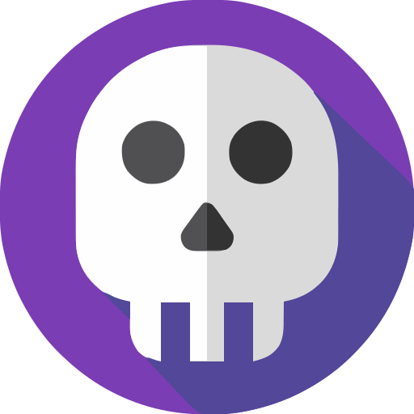

Porta ocupada?
Liberada em 1 clique.
Gerenciador de portas e processos nativo para Windows. Encontre e encerre processos travados sem sair do seu fluxo de código.
Uma alternativa visual para o terminal
Para quem prefere resolver portas ocupadas com rapidez e praticidade, direto pela barra de tarefas.
Terminal e netstat
- Excelente para scripts e uso em linha de comando
- Exige consultar PID e digitar comandos a cada porta
- Processos protegidos exigem reabrir prompt com elevação
Direto na Barra de Tarefas
Acesso rápido pelo ícone ao lado do relógio.
Mostra Next, Vite, Docker e portas em tempo real.
Libera a porta e finaliza o processo na hora.
- Mais comodidade para o fluxo diário de desenvolvimento
- Botão "Parar Dev" encerra múltiplos servidores juntos
- Retorno imediato ao código em menos de 1 segundo
Engenharia focada no fluxo do desenvolvedor
Utilitários essenciais consolidados em uma experiência nativa ultraleve.
Encerramento Rápido e Filtros Dev
Reconhece Node, Vite, Next, Python e bancos. Um clique no botão "Parar Dev" para encerrar todos os servidores de teste.
Desbloqueador Win32 de Pastas
Descubra quais processos travam pastas como node_modules e destrave o acesso com segurança via Restart Manager API.
QR Code Wi-Fi para Testes no Celular
Gere um QR Code com o IP local da aplicação e teste no celular sem digitar URLs manualmente.
Monitoramento de Status e Latência
Testa se o servidor está online e mede o tempo de resposta em tempo real com gráfico do histórico.
Exportador para .env.local e Markdown
Exporte a lista de portas ativas para .env.local ou gere uma tabela Markdown para sua documentação.
Elevação de Permissão sob Demanda
Opera como usuário padrão e solicita privilégios de Administrador apenas para processos restritos do Windows.
Construído para velocidade.
Zero desperdício.
Desenhado em Rust nativo para consumir o mínimo absoluto de memória e CPU.
Arquitetura de Alta Performance
Baixe a versão ideal para seu fluxo
Disponível para Windows 11 e Windows 10 (64 bits). Sem adware, rastreadores ou dependências pesadas.
Instalador Windows
Taskvasne-Setup-0.2.3.exe
Instalação padrão com atalhos e integração automática à bandeja do Windows.
Baixar Instalador (.exe)Pacote MSI Corporativo
Taskvasne_0.2.3_x64_en-US.msi
Pacote padronizado para instalação corporativa via winget, Intune ou GPO.
Baixar Pacote (.msi)Executável Portátil
Taskvasne.exe
Binário avulso. Basta baixar e executar de qualquer pasta sem precisar instalar.
Baixar Portátil (.exe)Perguntas Frequentes
Respostas diretas sobre segurança, privilégios e funcionamento técnico.
Preciso rodar o Taskvasne como Administrador?
Não. O Taskvasne opera com permissões de usuário comum. Somente processos restritos do sistema solicitarão permissão pontual de Administrador (UAC).
Como o Taskvasne lida com Docker e WSL2?
Portas expostas pelo Docker Desktop e servidores rodando no WSL2 são detectados e listados automaticamente.
Como funciona o Desbloqueador de Pastas?
Utiliza a API nativa Win32 Restart Manager para identificar quais processos estão bloqueando a pasta ou arquivo, liberando-os com segurança.
Existe telemetria ou envio de dados na nuvem?
Nenhum. O Taskvasne é 100% offline, sem telemetria ou rastreadores, com código aberto sob licença MIT no GitHub.
☕ Apoie o Projeto
"Desenvolvo e compartilho ferramentas que uso diariamente no meu trabalho."
GitHub Sponsors
github.com/sponsors/rkvasneMercado Pago
link.mercadopago.com.br/kvasnePayPal
Doação via PayPal📱 QR Codes (Pix e PayPal)
💚 O Taskvasne é 100% gratuito e de código aberto. Apoios são voluntários e incentivam a manutenção contínua.